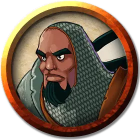

Феникс Наковальня
Phoenix Anvil
Средний Гуманоид (Человек), законно-нейтральный, именной НИП

Класс Доспеха 18 (кольчужная рубаха, щит)
Хиты 27 (5к8 + 5)
Скорость 30 футов
| мод | спас | ||
|---|---|---|---|
| СИЛ | 15 | +2 | +2 |
| ЛОВ | 10 | +0 | +0 |
| ТЕЛ | 12 | +1 | +1 |
| мод | спас | ||
|---|---|---|---|
| ИНТ | 13 | +1 | +1 |
| МДР | 16 | +3 | +3 |
| ХАР | 13 | +1 | +1 |
Навыки Атлетика +5, Выступление +3, Религия +3, Убеждение +3
Чувства пассивное Восприятие 13
Языки Общий, Эльфийский
Опасность 2 (450 опыта)
Бонус мастерства +2
Особенности
Божественное проявление (1/день). Бонусным действием Феникс заставляет свой щит вспыхнуть божественным светом. Каждое выбранное им существо в пределах 30 футов от него должно совершить спасбросок Мудрости Сл 13, иначе станет ослепленным на 1 минуту. Существо может повторять спасбросок в конце каждого своего хода, оканчивая на себе эффект в случае успеха.
Использование заклинаний. Феникс является заклинателем 4-го уровня. Его базовой характеристикой является Мудрость (Сл спасброска от заклинания 13, +5 к попаданию атаками заклинаниями). У него подготовлены следующие заклинания жреца:
• Заговоры (неограниченно): указание [guidance], свет [light], починка [mending], священное пламя [sacred flame];
• 1 уровень (4 ячейки): порча [bane], лечение ран [cure wounds], направляющий снаряд [guiding bolt];
• 2 уровень (3 ячейки): удержание личности [hold person], божественное оружие [spiritual weapon].
Действия
Мультиатака. Феникс совершает две рукопашные атаки.
Боевой молот. . Рукопашная атака оружием: +4 к попаданию, досягаемость 5 футов, одна цель. Попадание: 6 (1к8 + 2) дробящего урон и цель должна преуспеть в спасброске Силы Сл 12, иначе будеь отброшена на 5 футов.
Описание
Участник команды "Б", Феникс Наковальня - слуга Уокина и тихий человек. Очень мягкий. Например, он разговаривает так редко, что даже сам может не узнать свой собственный голос. Феникс родом с улиц, где он вырос бойцом, пока работа подметальщика ступеней небольшого храма Уокина не показала ему новый путь. Таким образом, его жажда денег как авантюриста руководствуется его знанием того, без чего можно обойтись.
Феникс больше ориентирован на объект, чем на людей, и одержимо заботится об активах и счетах франшизы. К счастью, он включает в число этих активов своих коллег-сокомандников, что делает его яростно преданным. Тем не менее, Дуб Меткобьющий - единственный член команды, к которому он когда-либо по-настоящему привязывался, что не приносит им обоим никакой пользы.